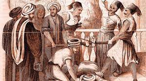

La terrible economia de los esclavos/negros fue usada en el triangulo comersial.
Cuando se descubrió américa portugal pasó a ser la primera potencia de esclavos de europa por lo tanto ganó mucho dinero vendiendo esclavos.
Los esclavos no tenían poder o riqueza propia simplemente eran tratados y vendidos como animales, esas personas que los vendían ganaban dinero de forma exponencial casi todos tenían esclavos en esas épocas.

Economia
La terrible economia de los esclavos/negros fue usada en el triangulo comersial.
Cuando se descubrió américa portugal pasó a ser la primera potencia de esclavos de europa por lo tanto ganó mucho dinero vendiendo esclavos.
Los esclavos no tenían poder o riqueza propia simplemente eran tratados y vendidos como animales, esas personas que los vendían ganaban dinero de forma exponencial casi todos tenían esclavos en esas épocas